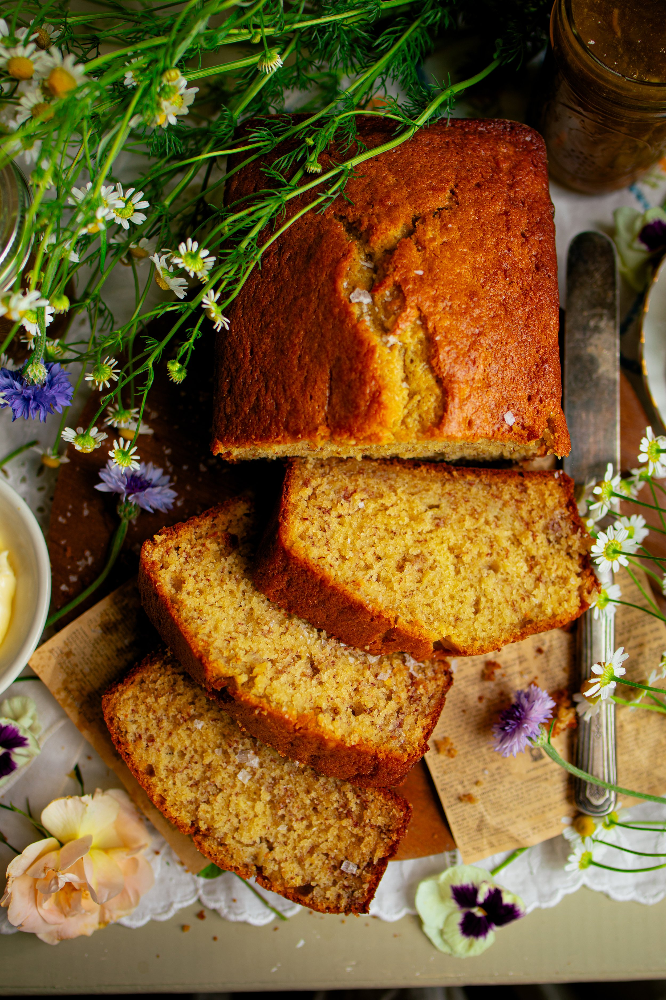

Banana Bread Recipe

This old-fashioned classic banana bread is my favorite recipe that I have been using for nearly a decade! It's the perfect breakfast treat for any season. Made in one bowl with simple ingredients, this the best super soft and moist banana bread with ideal sweet banana flavor.
List of ingredients:
- 2 cups (250 g) all-purpose flour
- 1 tsp (6 g) baking soda
- 1/2 tsp kosher salt
- 1/2 cup (116 g) salted butter, softened
- 1 cup (200 g) granulated sugar
- 2 large eggs
- 1 1/2 tsp vanilla extract
- 1/2 cup (120 ml) buttermilk, room temperature
Recipe Steps:
- Preheat the oven to 350° F (177° C). Grease and flour a 9 x 5-inch (23 x 13-cm) loaf pan. Set this aside while you prepare the batter.
- In a medium bowl, whisk together the flour, baking soda, and salt. Set this aside for now.
- In a large bowl, cream together the butter and sugar until light and fluffy, about 2 to 3 minutes. Then beat in the eggs, mixing them in one at a time, until they are fully incorporated, about 2 minutes. Whisk in the vanilla.
- Gently stir in the dry ingredients alternately with the buttermilk until the batter just comes together. Then, fold in the mashed banana. Stir with a wooden spoon or spatula until the batter is the consistency of thick pancake batter being careful not over mix.
- Spread the batter evenly in the prepared pan and bake the bread for 50 to 60 minutes or until a toothpick inserted in the center comes out clean or with a few moist crumbs on it. Let the bread rest in the pan for about 10 minutes before moving it to a wire cooling rack to finish cooling.
- Slice the banana bread and serve at room temperature. Store the banana bread wrapped in plastic or in an airtight container at room temperature for about 4 to 5 days.
Back to homepage